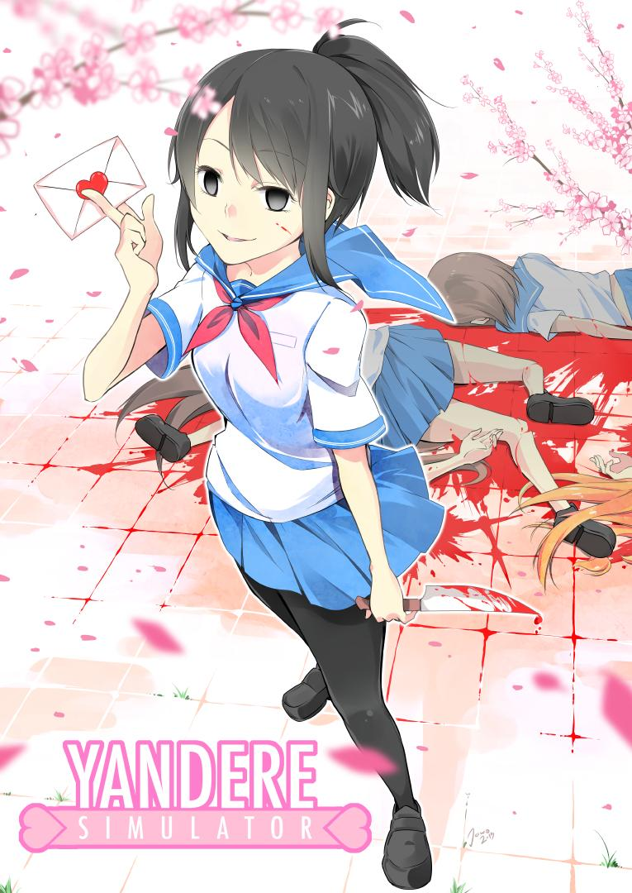
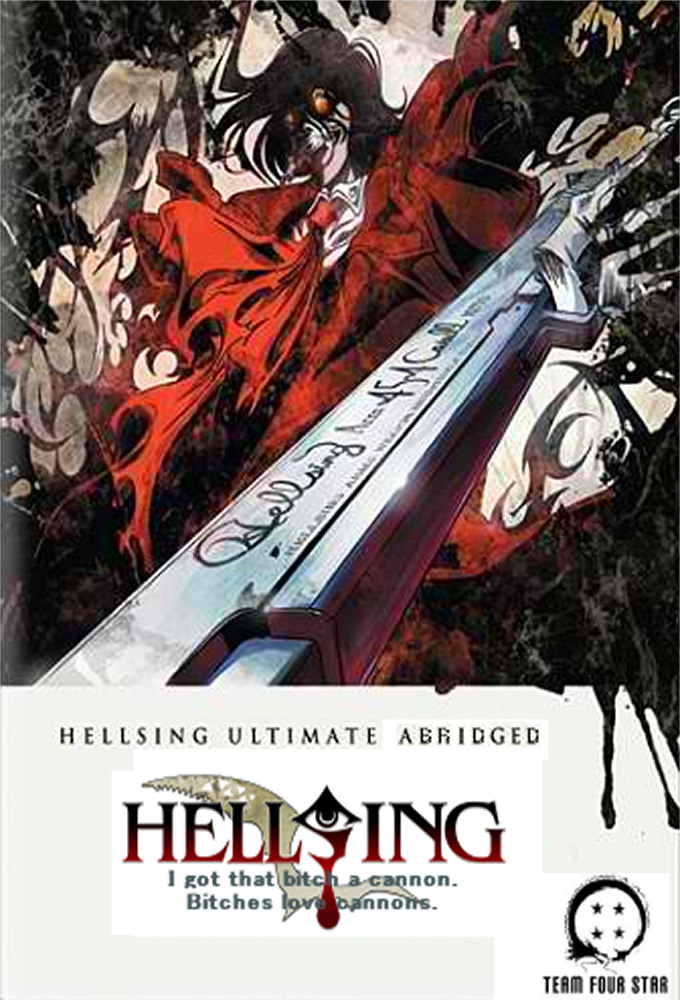
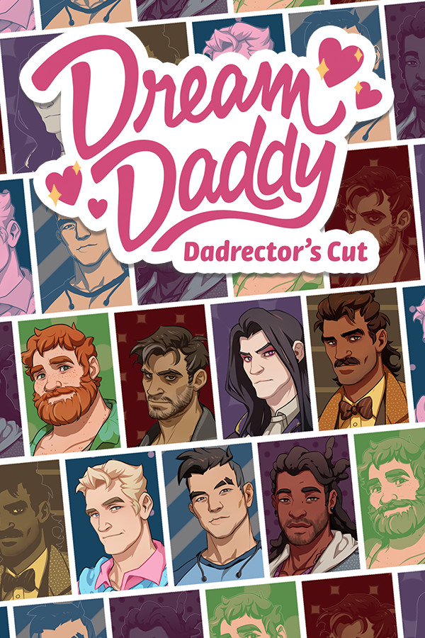
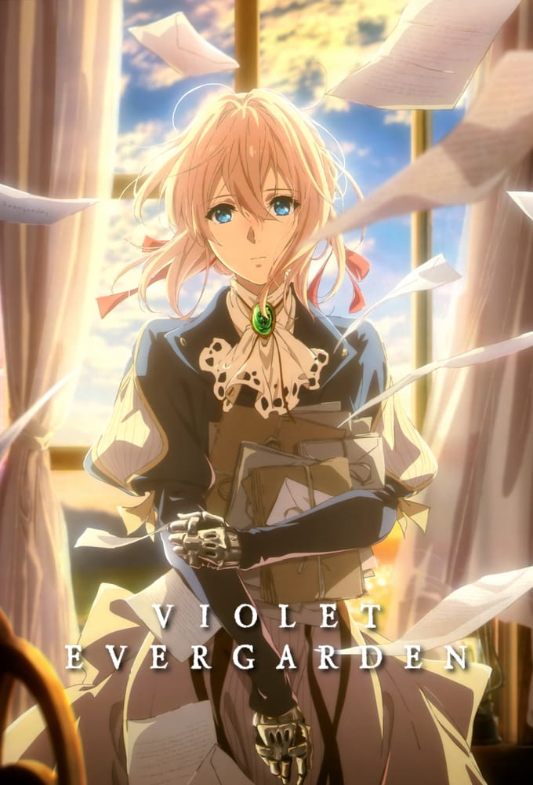

Nathan Sharp

Nathan Sharp, also known as NateWantsToBattle, is an American voice actor, musician and gaming commentator. Best known for his gaming and anime music videos, from popular songs about video games to unique covers of existing songs, to performing anime openings in English. He has also released several original albums, the most notable being "Sandcastle Kingdoms," released in March of 2017.
Here's a list of multimedia content that he was a part of as a voice actor:
-
2008 (IMBD) - Sukippu bîto! as Imai

Genres: Animation Comedy Drama Romance
Keywords: acting, actress, dream, shoujo, based on comic book, showbiz drama, love, revenge, childhood friend, tokyo japan, success, stardom, showbiz, devotion, betrayal, anime
The girl Kyoko Mogami lives alone in an apartment with her big love the childhood friend Sho Fuwa. He is a big music star and has many fans. One day he breaks up with her telling her she is a plain woman, and the only reason he stayed with her all this time was so she could wash his clothes and pay his rent. Kyoko swears to never love again and take revenge on Sho by entering showbusiness and becoming a much bigger star than him. Getting into showbusiness proves to be more challenging than she thought but on her way she meets curious and interesting people and a new life begins.
Stuff
- 2008 (IMBD) - The Party Record as Hutch
- 2011 (IMBD) - Rio: Rainbow Gate as an additional voice
- 2011 (IMBD) - One Piece as an additional voice
- 2014 (IMBD) - One Piece: 3D2Y: Overcome Ace's Death as an additional voice
- 2014 (IMBD) - LORE in a Minute! as Narrator
- 2014 (IMBD) - Life is Brutal as Jim Young
- 2015 (IMBD) - Death Battle as Red
- 2015 (IMBD) - Big Bad Bosses: I'm the Boss as Sephy
- 2015 (IMBD) - Fairy Tale as an additional voice
- 2015 (IMBD) - Gumball as Lawrence
-
2015 (IMBD) - Yandere Simulator as Sota Yuki

Yandere Simulator is a thriller, single-player video game, developed by YandereDev and released in 2015 by SunFish Games Studio.
Genres: Animation, Drama, Romance, Thriller
Keywords: Yandere, psycho, stealth game, single player, simulation game, microsoft windows, rivals, elimination, two word title, high school, rival
Plot: Ayano Aishi was a girl who was stumbling through life unable to feel emotion until she met her Senpai. But in her high school it seems everyone wants her Senpai which is unacceptable. She will stop them at any means expelling, bullying, and murdering or any other means necessary to make sure they stay away from Senpai.

Yandere Simulator is a thriller, single-player video game, developed by YandereDev and released in 2015 by SunFish Games Studio.
Voice Acting: Nathan voice acted for the character Sota Yuki (Sota Fuyuki), a male student who attended Akademi, his appearence being made in the first week while playing in the 1980s Mode.
An energetic and fun-loving boy. Loves to make horrible puns. Enjoys pulling small pranks on people, but refuses to do anything mean-spirited.
-
2016 (IMBD) - Hellsing Ultimate Abridged as a Comm Officer

Hellsing Ultimate Abridged is a comical abridged version of "Hellsing Ultimate (2006)" with amusing parody dubbing.
Genres: Animation, Action, Comedy, Fantasy, Horror
Keywords: Psychotronic series, tv mini series, abridged series, anime, anime parody, web series, fandub, parody, nickname, sniper, butler, sidekick, priest, nazi, vampire hunter, police, vampire
Plot(?): A shortened, re-dubbed and much funnier take on "Hellsing Ultimate" (2006). Follow Alucard on his long, enthusiastic walks, and follow Seras, the police girl, as she comes to terms with her vampirism. And nets a sweet-ass cannon in the process.
(Actual anime) Plot: The vampire Alucard, his master Sir Integra Fairbrook Wingates Hellsing, and his newly sired ward Seras Victoria, try to protect England from a war-crazed SS-Major who seeks to start an eternal war with his vampire army.
-
2016 (IMBD) - The Disastrous Life of Saiki K.

The Disastrous Life of Saiki K is a comical slice of life anime which depictions the life of a introverted psychic.
Genres: Animation, Comedy, Fantasy
Keywords: Supernatural power, psychic teenager, psychic, telepathy, psychic powers, friendship, father son relationship, mother son relationship, psychotronic series, anime, the letter psi, pink hair, teenager, japanese teenager, absurd comedy, anime animation, psychokinesis, 2d animation, japan, high school, parody, slice of life, letter in title, based on manga, shounen, character name in title
Saiki Kusuo is a powerful psychic who hates attracting attention, yet he is surrounded by colorful characters who always find a way to remove him from his everyday life.
- 2016 (IMBD) - Cheer Boys!!
- 2016 (IMBD) - One Piece: Gold as an additional
- 2016 (IMBD) - Endride as an additional voice
- 2016 (IMBD) - Luck & Logic as Yoshichika
- 2016 (IMBD) - FNAF: The Musical as NWTB
- 2016 (IMBD) - The Heroic Legend of Arslan as an additional voice
- 2016 (IMBD) - Puzzle & Dragons X as Host
- 2016 (IMBD) - 2064: Read Only Memories as Chad 'Starfucker' Mulberry
- 2016 (IMBD) - Handa-kun as an additional voice
- 2016 (IMBD) - Atelier Firis: The Alchemist as Heintz
- 2016 (IMBD) - Big Bad Bosses: Angel as Sephy
- 2016 (IMBD) - Shantae: Half-Genie Hero as Bolo
- 2017 (IMBD) - NWTB: Become the Hero as Nathan Sharp
- 2017 (IMBD) - Mobile Suit Gundam: Iron-Blooded Orphans as Mail
- 2017 (IMBD) - Pinstripe as George
- 2017 (IMBD) - Fairy Tale: Dragon Cry as Gapri
- 2017 (IMBD) - NWTB: Heroes Never Die as Nathan Sharp
-
2017 (IMBD) - Dream Daddy: A Dad Dating Simulator as Craig Cahn

Dream Daddy is a romance oriantated, single-player video game, released in 2017, it being produced by Game Grumps Entertainment.
Genres: Romance
Keywords: Dating simulator, nintendo switch, playstation 4, microsoft windows, multiplatform, android game, ios
Plot: You move out of your old house with your daughter, Amanda, and move to a new cul-de-sac neighborhood where a bunch of dads live. Your goal is to date them to find your "dream daddy".

Dream Daddy is a romance oriantated, single-player video game, released in 2017, it being produced by Game Grumps Entertainment.
Voice Acting: Nathan voice acted for the character Craig Cahn (Fitness Dad), one of the date-able dads in Dream Daddy. He's an old college friend and one-time roommate with the player. He was working in California and moved his business to Maple Bay.
Dad of three, business entrepreneur, and fitness enthusiast. Juggling work, family, and fitness is a tough gig, but someone's gotta do it!
- 2017 (IMBD) - Crystalline as Zack Spade
- 2017 (IMBD) - Kakeguri as an additional voice
- 2017 (IMBD) - Starter Squad as Pidgeotto
-
2018 (IMBD) - Violet Evergarden as Toby Selwin

Violet Evergarden is an anime based on emotional discovery, produced by ABC & DO animation along with Bandai Namco Arts and published in 2020.
Genres: Animation, Drama, Fantasy, Romance, Sci-Fi
Keywords: anime, fictional war, fictional country, trauma, prosthetic arm, first love, letter writing, typewriter, post war, female protagonist, female veteran, war veteran, orphan, steam punk, teenager, death, war flashback, love, stuffed dog, train, brooch, adoption, mail carrier, tv mini series, female wears eyeglasses, steampunk fantasy, steampunk, based on novel
Plot: After four long years of conflict, The Great War has finally come to an end. Caught up in the bloodshed was Violet Evergarden, a young girl raised to be a deadly weapon on the battlefield. Hospitalized and maimed in a bloody skirmish during the War's final leg, she was left with only words from the person she held dearest, but no understanding of their meaning. Recovering from her wounds, Violet starts a new life working at CH Postal Services. There, she witnesses by pure chance the work of an "Auto Memory Doll", amanuenses that transcribe people's thoughts and feelings into words on paper. Moved by the notion, Violet begins work as an Auto Memory Doll, a trade that will take her on an adventure, one that will reshape the lives of her clients and hopefully lead to self-discovery.

Violet Evergarden is an anime based on emotional discovery, produced by ABC & DO animation along with Bandai Namco Arts and published in 2020.
Voice Acting: Nathan voice acted for the character Toby Selwin.
- 2018 (IMBD) - Big Bad Bosses: Egg Man as Sephy
- 2018 (IMBD) - Stream of Many Eyes
- 2018 (IMBD) - NSP: Danny Don't You Know as HS Bully
- 2018 (IMBD) - Inazuma Eleven Ares as Axel Blaze
- 2018 (IMBD) - Acquisitions Incorporated: The C Team as Paul Seppa
- 2019 (IMBD) - Monster Prom: Second Term as Damien
- 2019 (IMBD) - River City Girls as Naritaka
- 2019 (IMBD) - Final Fantasy VII: Machinabridged as Zack
- 2020 (IMBD) - FF VII: Machinabridged THE MOVIE as Zack Fair
-
2020 (IMBD) - Attack on Titan as Marcel

Attack on Titan is a action, drama orianted anime, produced by Wit Studio, Production IG and Mappa.
Genres: Animation, Action, Adventure, Drama, Fantasy, Horror
Keywords: Giant, man eating monster, titan, based on manga, anime, potato, mysterious, friendship, tragedy, dystopia, eating human flesh, blade, battle tactic, special ability, healing ability, key, lesbian interest, wall, eaten alive, transformation, army, sword, lesbian, training, sudden attack, evacuation, dark fantasy, brother brother relationship, giant humanoid, kaiju
Plot: Humans are nearly exterminated by giant creatures called Titans. Titans are typically several stories tall, seem to have no intelligence, devour human beings and, worst of all, seem to do it for the pleasure rather than as a food source. A small percentage of humanity survived by walling themselves in a land protected by extremely high walls, even taller than the biggest of titans. Flash forward to the present, and mankind has not seen a titan in over 100 years. One day, 10 year old Eren and his foster sister Mikasa witness something horrific as the city walls are destroyed by a colossal titan that appears out of thin air. As the smaller titans flood the city, the two kids watch in horror as their mother is eaten alive. Eren vows that he will murder every single titan and take revenge for all of mankind.

Attack on Titan is a action, drama orianted anime, produced by Wit Studio, Production IG and Mappa.
Voice Acting: Nathan voice acted for the character Marcel, was the older brother of Porco Galliard, comrade and childhood friend of Reiner Braun, Bertolt Hoover, A nnie Leonhart and Pieck Finger. He was part of the group of Warriors sent by Marley to attack the Eldians of Paradis Island in year 845, but his mission was cut short by the sudden appearance of Ymir, as a Pure Titan. He possessed the ability to transform into the Jaw Titan.
"Quote"
-- by who